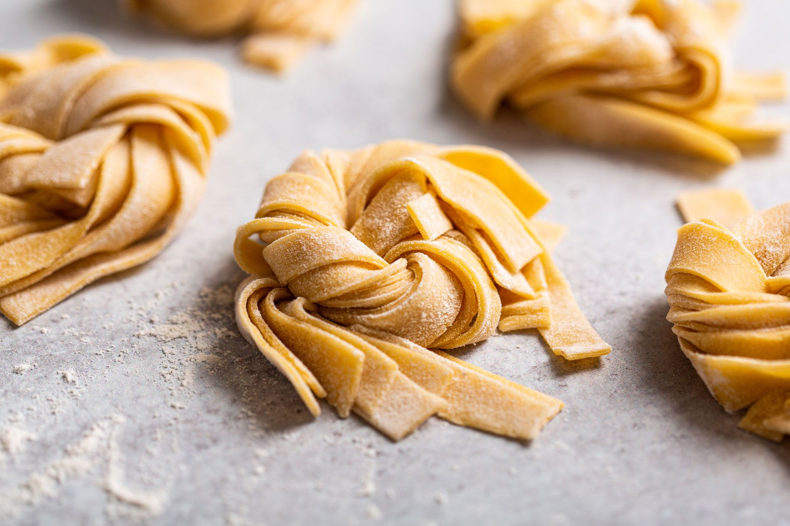

Receta de Pasta Fresca

Breve descripción de la receta de pasta italiana:
Aqui se enseña a cocinar pasta fresca de un nivel que es un espectáculo de verdad.
Ingredientes necesarios:
- 3 huevos frescos y gordos.
- 400 gramos de harina (no rates con marca blanca).
- Agua.
Pasos para preparar una pasta del copon:
- Hacer una montaña de harina, tipo volcan de la Palma de GC.
- Cascar los tres huevos y ponerlos en la boca del volcán.
- Remover hasta que quede una masa de puta madre.
- Dejar la mas en reposo de putu chill durante 1 hora.
- Pasar por la maquinilla de pasta.
- Cocer de una vez la pasta para un resultado de autentica coña.
Volver al inicio